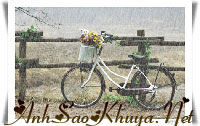

|
Gần 1 tháng trôi qua , người ta đã quen với hình ảnh của một người con trai vẫn đứng lặng im dưới gốc cây vào mỗi tối, nhín về phía cửa sổ của căn biệt thự nhỏ bên đường . Không ai biết chính xác là chuyện gì, họ chỉ biết rằng trong ngôi nhà đó có một cô gái mới trở về từ bệnh viện.Rồi đến một ngày, cũng vào một buổi tối như vậy, có một người con trai khác ân cần đưa cô về trên chiếc xe sang trọng của anh ta. Kể từ đó, không ai còn trông thấy người con trai đứng bên kia đường nữa. Nga, cô con gái của một doanh nghiệp có tên tuổi. Lâm, một chàng trai tỉnh lẻ, sống hòa đồng với mọi người. Họ tìm thấy nhau trên một diễn đàn . Họ chia sẻ với nhau những câu chuyện vui, những mẫu chuyện tình đọc được , rồi tâm sự với nhau những chuyện vui buồn của họ.Tình bạn ấy đã duy trì suốt gần 2 năm. Rồi đến một ngày, hai người cùng thi đậu vào một ngôi trường đại học.Tình bạn ấy là càng gắn bó hơn, và một mối tình trong sáng đã len lỏi vào trong cái tình bạn ấy suốt những năm tháng sinh viên. Lâm không có điều kiện như những người con trai khác, để mỗi ngày lại tới đón người yêu trên những chiếc xe đắt tiền.Nga thì chẳng đòi hỏi gì hơn, vì niềm hạnh phúc lớn nhất của cô là mỗi cuối tuần lại được ngồi trên chiếc xe đạp mà người yêu chở, được lắng nghe tiếng sao diều cùng người ấy ở những công viên nhỏ trong thành phố, được xem những đoạn clip lãng mạn mà người ấy làm tặng cho riêng cô. Nhưng rồi cuộc sống chẳng như những gì chúng ta mong. Gia đình Nga đã phản đối mối quan hệ giữa hai người.Họ không bao giờ chấp nhận chuyện đứa con gái duy nhất của mình đến với một người con trai nghèo, tương lai còn chưa rõ. Ngày ra trường, hai người hẹn ước, và khắc lên hai mảnh trái tim bằng ngọc dòng chữ: " hẹn ước 5 năm" . Anh sẽ tới một thành phố có điều kiện tốt hơn, nơi anh sẽ cố gắng để tạo lập sự nghiệp.5 năm sau,ngày mà nhà trường tổ chức họp mặt cho những người cùng khóa, anh sẽ trở về và sẽ chính thức cầu hôn cô. Hẹn gặp nhau lần cuối để rồi chia tay. Nhưng Nga đã không tới được,cô đã gặp tai nạn khi đang trên đường tới chỗ hẹn.Lâm đau lòng nhìn Nga bất tỉnh trên chiếc giường màu trắng của bệnh viện. Lâm khóc, anh hận mình tất cả. Gia đình Nga không muốn Lâm đến gần con gái họ. Nỗi đau giằng xé, Lam ko thể rới xa người yêu.Anh xin gia đình Nga được ở bên cho đến khi cô bình phục, anh hứa sẽ ra đi. Họ đồng ý. Vậy là từ đó, ngày nào anh cũng đến với cô, lại nắm tay cô, lại khóc.Cảnh tượng khiến ngay cả cha mẹ Nga cũng cảm động, nhưng những thành kiến về địa vị đã hằn sâu trong suy nghĩ họ, chẳng dễ gì thay đổi. Cô gái vẫn nằm đó,bất tỉnh, 1 tuần, 2 tuần trong sự lo lắng của mọi người. Rồi một hôm, bác sĩ thông báo cô có dấu hiệu hồi phục, đấy cũng là ngày Lâm thực hiện lời hứa của mình,anh phải ra đi. Nga trở về với cuộc sống bình thường. Cô sớm tìm lại được những ký ức, những thói quen của cô. Chỉ có một điều : cô không còn nhớ bất kì một chi tiết nào về Lâm nữa. Lâm như một người chưa từng tồn tại trong cuộc sống của Nga. Còn Lâm, anh đã không hề hay biết về điều đó. Mỗi tối, anh không thể đến bên cô, mà chỉ biết lặng lẽ đứng ở phía xa, nhìn lên cửa sổ phòng cô, nơi cô vẫn hay ngồi online nghe nhạc. Anh buồn khi nghĩ rằng người yêu đã quên mất anh (Lâm ko hay biết chuyện Nga mất trí nhớ về mình ). Nga bắt đầu đi làm. Cô gái trẻ xinh đẹp, dễ mến, biết bao nhiu kẻ sẵn sàng làm cây si ngay từ lần đầu gặp đầu tiên. Hôm xe cô bị hỏng, một chàng trai ga lăng cùng cơ quan đề nghị chở cô về. Và đấy cũng là ngày Lâm rời bỏ thành phố này. Thời gian trôi qua, Nga gặp lại những người bạn đại học của mình. Họ hỏi cô về chuyện tình lãng mạn với Lâm, họ hỏi về Lâm. Nga như con nai vàng ngơ ngác, nghe họ nhắc về một chuyện tình đẹp của ai đó, nhưng lại bảo là của mình. Lâm - một cái tên bình thường , mà sao nghe bạn bè nói cứ như là một cái gì đó chỉ thuộc về riêng cô. Họ cho cô xem những tấm ảnh mà họ chụp chung với hai người. Nga như một người mất phương hướng. Cô nhìn thấy mình luôn hạnh phúc khi đứng cạnh một người con trai mà cô chẳng thể nhớ là ai. Bạn bè cô bảo đấy là Lâm.Cô cố gắng lục lại trong kí ức của mình về tình yêu ấy, nhưng trống rỗng. Cô đặt tay lên ngực, cầm chiếc dây truyền 1 nủa trái tim còn khắc 2 chữ: " hẹn ước " mà chẳng biết là ai tặng. 5 năm trôi qua, ngày họp mặt của những người bạn cùng khóa.Nga trở về trường cũ, vẫn trẻ trung, vẫn xinh đẹp, vẫn làm mê hồn biết bao chàng trai khác. Cô gặp lại bạn bè cũ. Một chàng trai tới gần cô, giống như một người bạn thân khác, người ấy hỏi thăm về cuộc sống, công việc của cô. Cô cảm nhận rất rõ được sự vui mừng của anh ta khi nghe cô kể về cuộc sống yên ả và những thành công trong công việc.Nhưng cô thấy đôi mắt anh ta để lộ rõ nổi buồn và thất vọng khi nhìn cô đưa tay gọi người yêu tới. Anh ta không nói gì nhiều về mình, mà chỉ nói về một cuộc tình 5 năm, một lời hẹn ước đã đeo đuổi theo anh suốt những năm tháng qua. Rồi anh ta bước đi. Trong hội trường ồn ào, Nga nghe thấy tiếng của ai đó gọi lớn: - "Lâm IT, sao về sớm vậy" . 5 năm trôi qua, chưa có ngày nào Nga không tự hỏi:" Lâm ơi, Lâm là ai ". Bất giác có một cái gì đó, cô ngoảnh mặt lại. Người con trai mà nãy giờ trò chuyện với cô đang bước lên chiếc taxi màu bạc. Cô đuổi theo, nhưng không kịp nữa. Người giữ xe hỏi tên, rồi đưa cho cô chiếc dây truyền có 1 nửa trái tim còn lại, kèm lời nhắn : " Chúc em hạnh phúc " Chiếc dây truyền vẫn còn khắc rõ 2 chữ:" 5 năm " "Hẹn ước- 5 năm " hai mảnh trái tim, có thể Nga sẽ chẳng bao giờ nhớ đc về lời ước ấy, giống như những ký ức mờ nhạt về Lâm. Hoặc có thể cũng sẽ có 1 ngày cô sẽ nhớ ra tất cả mọi điều cùng với sự dằn vặt về bản thân.Nhưng chắc chắc, hai người sẽ chẳng bao giờ đến được với nhau nữa. Bởi vì 5 năm qua, Nga đã sống, một cuộc sống gần như không hề có Lâm. Còn Lâm, anh đã ra đi mãi mãi cùng với nỗi buồn vì người yêu đã quên anh, quên đi lời hẹn ước hôm nào .Chẳng ai có lỗi. Tất cả chỉ vì định mệnh cay đắng mà thôi. Nguồn: Bản quyền của ASK || Tham gia bình luận TẠI ĐÂY || Bạn vô tình đọc ở đâu đó một câu chuyện tình cảm động hoặc một câu chuyện do chính bạn viết ra. Hãy đến với chúng tôi để cùng nhau chia sẻ: wWw.anhsaokhuya.net
Chung tay vì một thế giới online lành mạnh !
|
 Rồi như có một cái gì đó trở lại với cô, hình ảnh về một người con trai mờ nhạt, lúc xa, lúc gần đã từng xuất hiện trong cuộc sống của cô. Cô nhớ lại những ngày bất tỉnh trong bệnh viện, dường như có một ai đó luôn ở bên cô. Không hẳn đấy là cha mẹ. Cô cảm nhận được những cái xoa tay ấm áp, nhẹ nhàng, cô nghe thấy những tiếng khóc khe khẽ, rồi những giọt nước mắt nóng hổi rớt trên tay cô.Cô cảm nhận rất rõ sự yêu thương mà người ấy dành cho mình, nhưng lại chẳng thể nào nhớ nổi đấy là ai. Cô nhớ kí ức vui vẻ bên một ai đó, người đã cho cô rất nhiều những kỷ niệm êm đềm, người đã bước vào cuộc đời cô, một phần không thể thiếu của cô nhưng người ấy giờ ở đâu. Cô nghe người bán nước trước đưới cửa kể về một thanh niên vẫn âm thầm dõi lên căn phòng cô vào mỗi tối, và giờ thì không còn nữa. Cô khóc, tại sao người ấy không đến tìm cô, tại sao người ấy lại xa cô. Phải chăng cô đã làm gì có lỗi. Trong bóng đêm, cô đau đớn giữa những kí ức mơ hồ .Cô muốn đưa tay ra nắm bắt, nhưng không thể được. Dường như những kí ức ấy không còn thuộc về cô nữa . Cô hận mình không thể nhớ nổi được người mình yêu.Màn đêm, cô đâu đớn gọi tên:
Rồi như có một cái gì đó trở lại với cô, hình ảnh về một người con trai mờ nhạt, lúc xa, lúc gần đã từng xuất hiện trong cuộc sống của cô. Cô nhớ lại những ngày bất tỉnh trong bệnh viện, dường như có một ai đó luôn ở bên cô. Không hẳn đấy là cha mẹ. Cô cảm nhận được những cái xoa tay ấm áp, nhẹ nhàng, cô nghe thấy những tiếng khóc khe khẽ, rồi những giọt nước mắt nóng hổi rớt trên tay cô.Cô cảm nhận rất rõ sự yêu thương mà người ấy dành cho mình, nhưng lại chẳng thể nào nhớ nổi đấy là ai. Cô nhớ kí ức vui vẻ bên một ai đó, người đã cho cô rất nhiều những kỷ niệm êm đềm, người đã bước vào cuộc đời cô, một phần không thể thiếu của cô nhưng người ấy giờ ở đâu. Cô nghe người bán nước trước đưới cửa kể về một thanh niên vẫn âm thầm dõi lên căn phòng cô vào mỗi tối, và giờ thì không còn nữa. Cô khóc, tại sao người ấy không đến tìm cô, tại sao người ấy lại xa cô. Phải chăng cô đã làm gì có lỗi. Trong bóng đêm, cô đau đớn giữa những kí ức mơ hồ .Cô muốn đưa tay ra nắm bắt, nhưng không thể được. Dường như những kí ức ấy không còn thuộc về cô nữa . Cô hận mình không thể nhớ nổi được người mình yêu.Màn đêm, cô đâu đớn gọi tên: